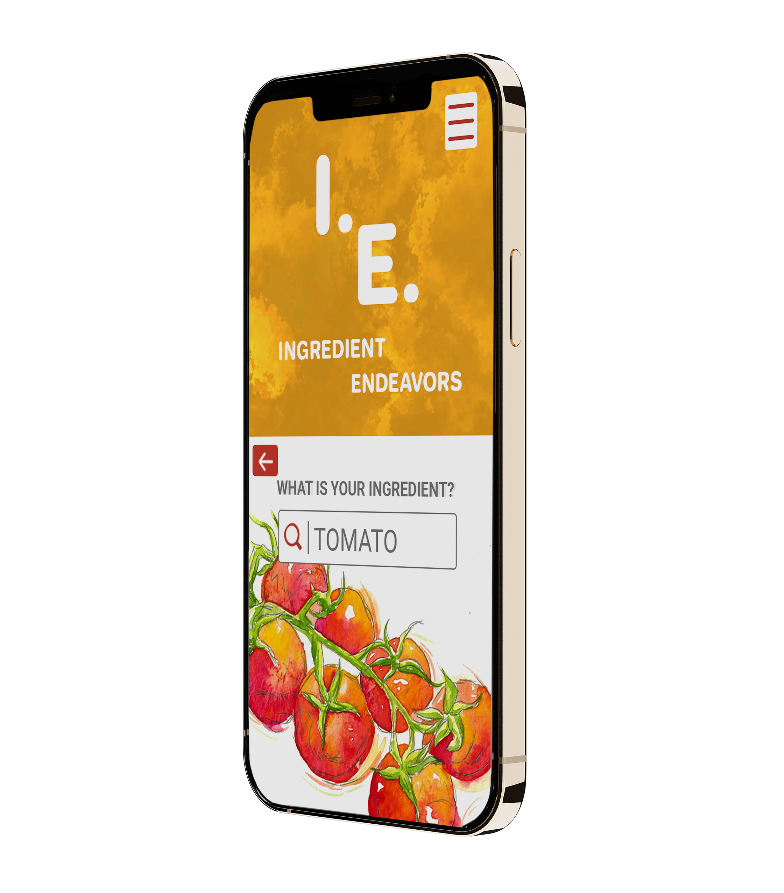

SUMMARY

I am excited at the beginnings of this project and have hopes that it may develop into something more since I plan to continue to share what I have learned with others.
To me, this project reflects on all of my education as a whole. It combines my background in illustration as well as design both in my professional career and education. I am very proud of it and looking forward to how this project can grow and what I can do next!
As time has passed since I had first started documenting weekly meals, I have collected many more cookbooks, along with much more knowledge of meal planning and cooking. I now have well over 50 physical cookbooks. How I document each week has changed quite a bit from having one large "Master" list in a word file. I now e-mail Monday through Friday out weekly. I find it easier as it leaves a "paper" trail that I can easily reference. I do not see an end in sight for my meal planning or my ever growing cookbook collection. I may need a bigger bookcase though!